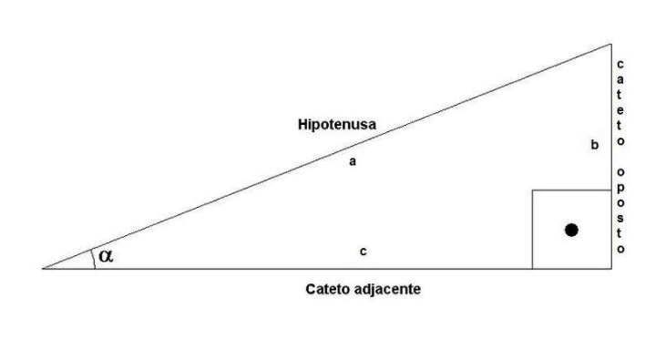
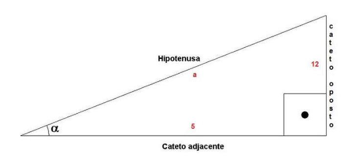
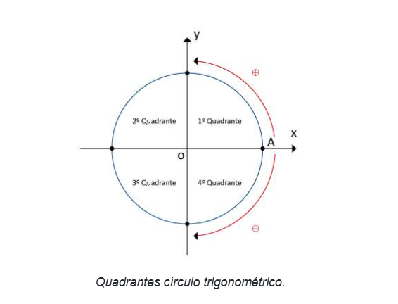
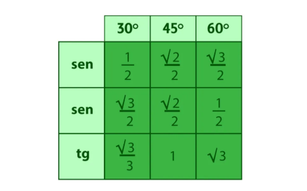
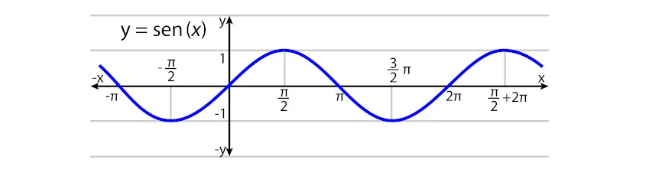
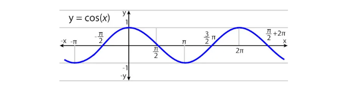
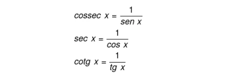
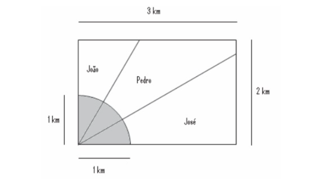
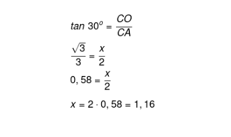
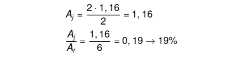

πclass — o principal pilar do seu aprendizado


O foco da trigonometria é o triângulo retângulo. Na geometria, denomina-se triângulo retângulo o polígono que possui um ângulo chamado reto (90º) e dois ângulos menores chamados ângulos agudos. A soma de todos os ângulos internos deve ser 180°.
Quanto a nomenclatura dos lados do triângulo, a hipotenusa é o maior lado do triângulo e oposto ao ângulo reto. Já os catetos são dois: o adjacente, que sempre estará ao lado do ângulo de referência e o oposto, como o nome já diz estará contrário.
O Teorema de Pitágoras, criado pelo filósofo e matemático grego, Pitágoras (570 a.C. - 495 a.C.), é muito utilizado nos estudo da trigonometria. Ele relaciona a medida dos lados do triângulo, por meio do enunciado: a soma dos quadrados de seus catetos corresponde ao quadrado de sua hipotenusa, representado da seguinte forma:
a² = b² + c²
Sendo: a (hipotenusa), b (cateto) e c (cateto).
Por exemplo, com base no Teoremas de Pitágoras, para determinar a medida “a” do triângulo retângulo abaixo deve-se fazer o cálculo posterior:
a² = b² + c²
a² = 12² + 5²
a² = 144 + 25
a² = 169
va² = v169
a= 13
O círculo trigonométrico, também chamado de ciclo ou circunferência trigonométrica, é um elemento circular que possui raio 1 e centro - colocado no ponto O = (0,0) de um plano cartesiano. Cada ponto do círculo está relacionado a um número real, geralmente expresso em função de p.
O círculo trigonométrico também possui duas retas perpendiculares entre si, ambas com o valor 0 (zero) no ponto de interseção. Existem dois sentidos de marcação dos arcos no círculo: sentido negativo (horário) e o sentido positivo (anti-horário), por onde ele geralmente tem início.
As medidas dos ângulos no círculo podem ser identificadas em graus ou em radianos, pois são diretamente proporcionais. Entenda:
Abaixo algumas relações entre graus e radianos:
Os eixos x e y dividem a circunferência em quatro e são chamados de quadrantes. Esses quadrantes também são dispostos no sentido anti-horário e são numerados de 1 a 4, e dispostos no círculo trigonométrico da seguinte forma:
As razões trigonométricas estão relacionadas com os ângulos de um triângulo retângulo, sendo as principais: o seno, o cosseno e a tangente. Essa razões trigonométricas são resultado da divisão entre as medidas de dois lados de um triângulo retângulo
É importante saber que as razões trigonométricas também são funções periódicas, pois seus valores se repetem em cada intervalo (período).
Em trigonometria são chamados de ângulos notáveis aqueles que aparecem com maior frequência nos cálculos, ganhando menção honrosa em relação a tantos outros. Deste modo, conhecer os valores em seno, cosseno e tangente é muito vantajoso.
Temos como principais funções trigonométricas: seno e cosseno. Elas são conhecidas como funções periódicas porque, de período em período, o gráfico comporta-se de forma simétrica
Quando construímos o ciclo trigonométrico, é possível, para todo valor de x no intervalo [0, 2π], encontrar um ponto que represente esse valor. Sendo assim, cada número é associado a um ponto no plano trigonométrico.
Dado um número x pertencente ao conjunto dos números reais e A como o ponto que representa sua imagem no ciclo trigonométrico, definimos como função seno a função descrita pela lei de formação f(x) = sen (x), com domínio e contradomínio em R.
O valor de x é o ângulo, podendo ser trabalhado em radianos ou em graus. O gráfico da função seno é conhecido como senoide.
O gráfico da função seno é conhecido como senoide.
A função cosseno está definida nos mesmos parâmetros que a função seno, é uma função de R em R, cuja lei de formação é f (x) = cos (x). A diferença está somente nas imagens para os valores de x, e, ainda, a função cosseno tem um comportamento cíclico muito parecido com a função seno, com imagem limitada ao intervalo [-1, 1]. Seu gráfico é conhecido como cossenoide.
As identidades trigonométricas são fórmulas que relacionam as razões trigonométricas. Essas identidades são utilizadas para resolução de problemas envolvendo trigonometria.
Relaciona os valores do seno e do cosseno dado um mesmo ângulo, com base no teorema de Pitágoras:
sen²x + cos² x = 1
São conhecidas, respectivamente, como cossecante, secante e cotangente e são identidades importantes da trigonometria.
Devido à simetria das funções, temos que:
sen ( -x) = -sen (x)
cos (-x) = cos (x)
tan (-x) = -tan (x)
A trigonometria pode ser aplicada em qualquer situação que envolva triângulos, retângulos ou não. Nos triângulos não retângulos, utilizamos o que conhecemos como lei dos senos e lei dos cossenos. Há aplicações em diversas situações de cálculo de distâncias inacessíveis, e aplicações para o estudo de ondas utilizando-se as funções seno e cosseno
1. (Enem) Ao morrer, o pai de João, Pedro e José deixou como herança um terreno retangular de 3 km x 2 km que contém uma área de extração de ouro delimitada por um quarto de círculo de raio 1 km a partir do canto inferior esquerdo da propriedade. Dado o maior valor da área de extração de ouro, os irmãos acordaram em repartir a propriedade de modo que cada um ficasse com a terça parte da área de extração, conforme mostra a figura.
Em relação à partilha proposta, constata-se que a porcentagem da área do terreno que coube a João corresponde, aproximadamente, a:
(Considere √3/3 = 0,58)2. (ENEM)
Na figura acima, que representa o projeto de uma escada com 5 degraus de mesma altura, o comprimento total do corrimão é igual a:
Para encontrar a área do terreno do João, sabemos que o ângulo reto foi dividido em 3 partes iguais, logo, o ângulo representado pela região de extração de ouro é de 30º. Conhecemos a altura de 2 km do terreno, então, vamos calcular o cateto oposto ao ângulo utilizando a tangente
A área do João, Aj, é dada pelo produto entre a base e a altura dividido por dois, e a área do retângulo At é dada pelo produto entre a base e a altura. Para calcular a porcentagem, basta calcular a razão entre Aj e At.
At = 2 · 3 = 6
O comprimento total do corrimão será igual a soma dos dois trechos de comprimento igual a 30 cm com o trecho que não conhecemos a medida.
Observamos pela figura, que o trecho desconhecido representa a hipotenusa de um triângulo retângulo, cuja medida de um dos cateto é igual a 90 cm.
Para encontrar a medida do outro cateto, devemos somar o comprimento dos 5 degraus. Sendo assim, temos que b = 5 . 24 = 120 cm.
Para calcular a hipotenusa, vamos aplicar o teorema de Pitágoras para esse triângulo.
a^2 = 90^2 + 120^2 ⇒ a^2 = 8100 + 14 400 ⇒ a^2 = 22 500 ⇒ a = √22 500 = 150 cm
Note que poderíamos ter usado a ideia dos ternos pitagóricos para calcular a hipotenusa, visto que os catetos (90 e 120) são múltiplos do terno 3, 4 e 5 (multiplicando todos os termos por 30).
Desta forma, a medida total do corrimão será:
30 + 30 + 150 = 210 cm = 2,1 m